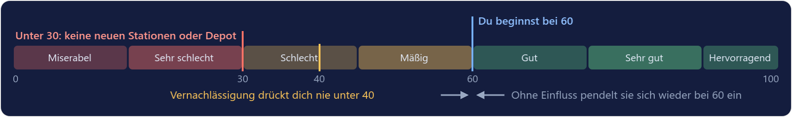

Gemeinderäte
Was der Gemeinderat von dir hält und warum das zählt.
Der Gemeinderat jeder Stadt bewertet jede Firma von 0 bis 100. Ein Gemeinderat, dem es reicht, lässt dich in seiner Stadt nicht mehr bauen.


Was deine Bewertung bewegt
| Änderung | Warum |
|---|---|
| +2 pro Monat | Jede deiner Stationen nahe der Stadt, an der im letzten Monat ein Fahrzeug zum Laden oder Liefern gehalten hat. Höchstens +6 pro Monat. |
| -1 pro Monat | Jede Station, die bedient wurde und seit 90 Tage kein Fahrzeug gesehen hat. Das allein drückt dich nie unter 40. |
| -8 | Jedes Gebäude der Stadt, das du abreißt. |
| -3 | Jedes Feld der städtischen Straßen, das du aufreißt. |
| -20 | Pro Zugunglück in weniger als 18 Felder Entfernung zum nächsten Stadtzentrum, je beteiligtem Unternehmen. |
| -0,5 | Jedes Feld Bäume, das du in oder direkt um die Stadt fällst, höchstens -6 auf einmal. |
| 1,5 pro Monat | Ohne Einfluss pendelt sich die Bewertung wieder bei 60 ein: doppelt so schnell, solange der Gemeinderat dich ablehnt. |
- Straßen und Wälder draußen auf dem Land gehen den Gemeinderat nichts an.
- Das Stadtfenster zeigt deine Bewertung und listet, was sie zuletzt bewegt hat.
- Eine Bitte des Gemeinderats zu erfüllen, kann viel bringen: siehe Subventionen und Bitten.
Zurückgewinnen
| Im Stadtfenster | Preis | Bewertung | Und außerdem |
|---|---|---|---|
| Werben | 9.000 $ | +4 | Für 60 Tage bekommen deine Stationen in der Stadt +15% auf ihre Bewertung. |
| Bäume pflanzen | 4.000 $ | +7 | Bis zu 30 Bäume rund um die Stadt, was auch den Bodenwert hebt. |
| Neubauten fördern | 40.000 $ | +3 | Die Stadt wächst 120 Tage lang schnell. |